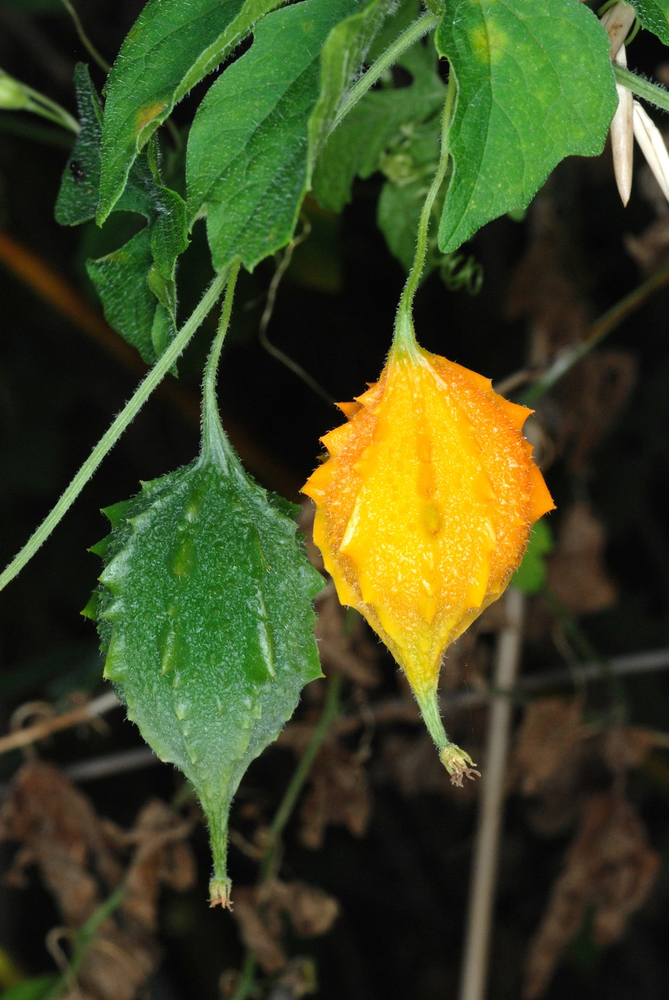

农作物与经济植物 · 植物界
苦瓜 Momordica charantia

苦瓜的果实味苦、富含苦瓜苷，是夏季常见的瓜类蔬菜，可炒食和煮汤，民间认为有助于清热解暑、辅助降血糖。
- 分类
- 门被子植物门纲双子叶植物纲目葫芦目科葫芦科属苦瓜属
- 栖息环境
- 温暖湿润的菜地，喜光照充足、疏松排水良好土壤
- 地理分布
- 原产热带亚洲，现中国、印度、东南亚等地广泛栽培
- 保护级别
- 暂无评估（栽培作物）
物种志
苦瓜是一年生攀援草本，茎蔓生、有卷须，分枝多。叶片掌状深裂，边缘有齿。花单性同株，黄色，五瓣。果实为瓠果，长椭圆形或纺锤形，表面有许多瘤状突起，成熟时橙黄色，开裂后露出鲜红色的假种皮和种子；未成熟时绿色，味苦。
苦瓜原产热带亚洲，中国南方栽培历史悠久，如今各地均有种植。它喜温暖湿润、光照充足，不耐寒，适宜在疏松肥沃、排水良好的土壤中种植，多搭架栽培。嫩果可炒食、凉拌、煮汤，苦味来自苦瓜苷等成分；成熟果实的红色假种皮可食。苦瓜富含维生素 C、膳食纤维和苦瓜苷，民间认为有清热解暑、辅助降血糖之效，但不能替代药物治疗。
形态与习性
- 果实长椭圆或纺锤形，表面有瘤状突起
- 花黄色，雌雄同株
- 苦味来自苦瓜苷等成分
- 用途炒食、凉拌、煮汤
- 食疗清热解暑、辅助降血糖
趣味知识
- 苦瓜表面的瘤状突起是它的典型特征，越瘤越苦的说法并不准确。
- 苦瓜成熟后会变成橙黄色并裂开，露出鲜红的假种皮。
- 苦瓜的苦味来自苦瓜苷，民间认为它能清热解暑。